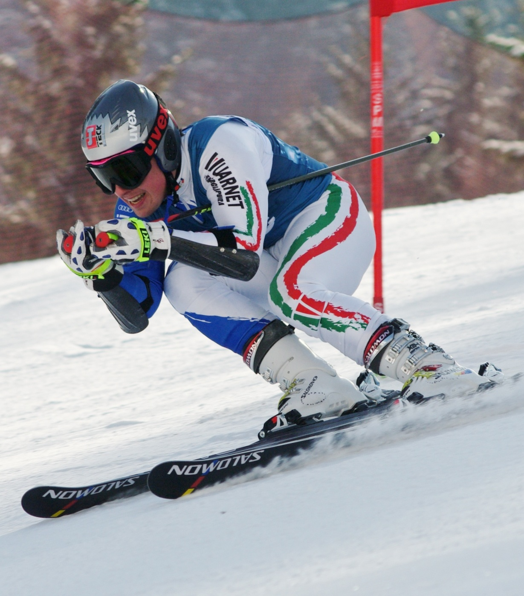

The two main tyes of races are GS and Slalom there are ten races per season half are GS the other half is Slalom. The Third type is Super G which usually only the U14 and higher attend. All of the races count towards points. The less points the better your standings are. The state races are all three of the race types on one weekend.
The people who fall or DNF will be put last on the second run, and will not recive points The points are awarded based on being in the top 30 people of each run. The 30th person on the first run will go first on the second run. The rest of the people up to first place will be reversed based on time. These people have earnd points twoards states, everyone else still can because the second run top 30 can still earn points.